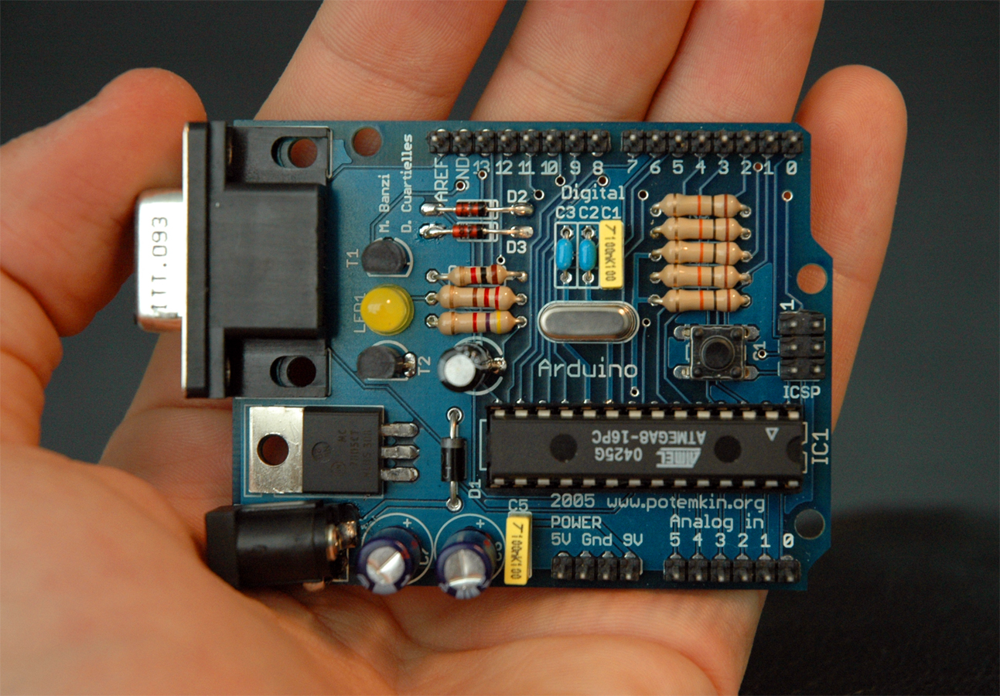

Es una guía para el desarrollo y evaluación de licencias que refiere a los artefactos tangibles máquinas, dispositivos, u otros objetos del mundo físico cuyo diseño ha sido publicado de forma tal que cualquier persona abiertamente pueda:
Ver el diseño completo
Modificar y adaptar el diseño
Fabricar y distribuir copias, incluso con fines lucrativos.
La Asociación de Hardware de Código Abierto (OSHWA) es la organización que promueve este movimiento, organizando eventos y gestionando la certificación de hardware que cumple con estos principios.
Raíces informales (1975): el Homebrew Computer Club en Silicon Valley, donde aficionados compartían libremente esquemáticos de microprocesadores
Primer intento formal (finales de los 90): el Open Hardware Certification Program de Bruce Perens, quien registró el término “open hardware”
Proyecto que lo popularizó (2005): Arduino, creado por un grupo de ingenieros para hacer accesible la electrónica programable.
Definición 1.0 de la OSHW
La licencia OSHW obliga a clarificar que los productos no son manufacturados, vendidos, garantizados, o sancionados por el diseñador original y no usará alguna marca perteneciente al diseñador original.
Los términos de distribución debe cumplir con:
Documentación completa.
Alcance de la documentación.
Software necesario para funcionar.
Garantiza la libre modificación
Garantiza la libre distribución del diseño
Atribución
No ser discriminatoria a personas.
Redistribución de la licencia sin permisos adicionales.
Licencia no es restringida a otro hardware o software
Reproducibilidad científica: cualquier laboratorio puede replicar el instrumento exacto usado en un estudio
Reducción de costos: elimina márgenes de propiedad intelectual en investigación y educación
Independencia tecnológica: evita depender de un solo fabricante (vendor lock-in)
Aceleración de la innovación: cada mejora se suma al acervo común en lugar de perderse
Ventajas vs Desventajas con respecto al hardware cerrado
Ventajas
Transparencia de un aspecto del diseño
Comunidad global que documenta, corrige y extiende el diseño
Menor costo de entrada para educación e investigación
Longevidad: si el fabricante desaparece, el diseño sigue vivo
Fomenta economías locales (cualquiera puede fabricar)
Desventajas
Soporte técnico fragmentado y no garantizado
Calidad y control de manufactura más variables
Curva de aprendizaje mayor para el usuario final
Financiamiento y sostenibilidad del proyecto más inciertos
Certificaciones regulatorias más difíciles de costear
Electrónica y cómputo: Arduino
Es una plataforma de electrónica de código abierto (hardware y software libre) para facilitar, el estudio y prototipado rápido de proyectos con componentes interactivos.
Se compone de:
Hardware: Placas basadas en microcontroladores
Software: El Entorno de Desarrollo Integrado (IDE) para programar las placas mediante un lenguaje adaptado de C/C++ Emuladores: Software que imita el comportamiento del hardware para agilizar la fase de diseno.

Electrónica y cómputo: Beagle Bone
La comunidad BeagleBoard.org desarrolla soluciones de computación física de código abierto, incluyendo robótica, herramientas de manufactura personal como impresoras 3D y cortadoras láser, y otros tipos de controles industriales y de maquinaria.
Es una plataforma abierta de agricultira de precisión basada en un robot agricultor de coordanadas cartesianas, software y documentación que incluyendo un repositorio de datos agrículas. El proyecto tiene como objetigo crear una tecnología abierta y accesible para apoyar a cualquier persona a la producción de alimentos agrícolas.
Es un proyecto Argentino impulsado desde AlterMundi y la Comunidad, Trabajo y Organización (CTO) para desarrollar la infraestructura tecnológica comunitaria (equipos, software y sensores como la “LibreIncu”) que permita a la Agricultura Familiar, Campesina e Indígena reproducir pollitos y recuperar razas camperas de forma autosuficiente y ecológica.
Es una comunidad global de unos 40,000 voluntarios en más de 100 países que imprimen en 3D prótesis de mano y brazo gratuitas o económicas, con diseños de código abierto. Han beneficiado a entre 10,000 y 15,000 personas, sobre todo en comunidades con poco acceso a atención médica.
Fué una compañía dedicada en democratizar la exploración submarina. Hoy es una comunidad de aficionados y profesionales que construyen sus propios submarinos OpenROV en más de 30 países, para explorar subacuátia. Los foros de OpenROV (archivados en 2015 en la Wayback Machine) ofrecen un espacio para intercambiar ideas, resolver problemas y compartir información. Además, los usuarios pueden documentar sus construcciones, proyectos y despliegues en la plataforma Open Explorer.
Poppy es una plataforma de código abierto para crear, usar y compartir objetos robóticos interactivos, para principiantes, expertos en educación, ciencia y arte, con el fin de aprender y compartir ideas sobre tecnologías digitales. Su tecnología combina modelos de hardware de código abierto (licencia CC-BY-SA), una biblioteca de software libre en Python llamada Pypot, y un sitio web comunitario (poppy-project.org) con documentación, tutoriales, simuladores y espacio para contribuir a la plataforma.
Movilidad: Open Source Car Architecture Research, OSCAR:
es un proyecto con el objetivo de crear un estándar abierto y colaborativo del chasis de vehículos para ahorrar costos, facilitar la homologación e involucrar a toda la cadena de desarrollo.
Su misión es reducir los costos de desarrollo, disminuir las barreras de homologación y permitir que todas las empresas de la cadena de valor del desarrollo de vehículos participen.